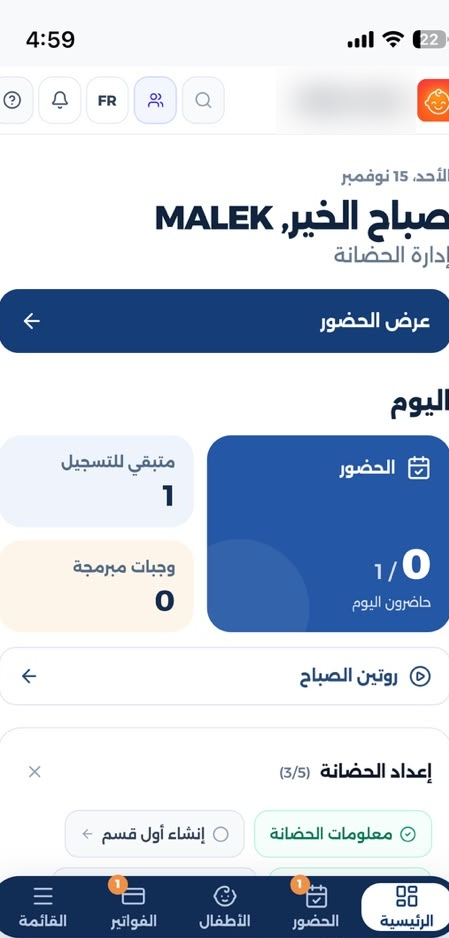
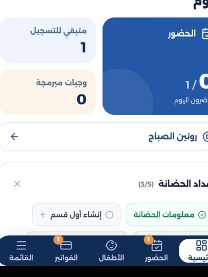
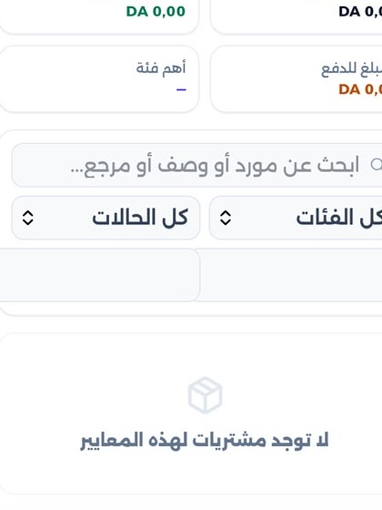

إعداد الحضانة
3/5
خطوتين باقيين قبل ما تبدا الخدمة.
ACCUEIL
لوحة الاستقبال
الحضور والوجبات والمتبقي، في الأول.
Rawdha+تسيير الحضانة، ببساطة
نظرة واحدة على الصباح
قبل ما تحلّي الباب، الصورة واضحة.
الحضور، الوجبات، والمتبقي للتسجيل، وإعداد الحضانة — كلهم في لوحة الاستقبال.
حضور
0/1
متبقي
1
وجبات
0
01
لوحة الاستقبال
الحضور والوجبات والمتبقي في الأول.
02
إعداد الحضانة
المعلومات والتنبيهات وأول قسم.
03
روتين الصباح
خطوة وحدة، وبعدها القائمة كاملة.

01لوحة الاستقبال

02إعداد الحضانة

03روتين الصباح
«معلومات الحضانة» و«إنشاء أول قسم»
الخطوات الجاهزة في لوحة الإعداد.
إعداد
3/5
متبقي
1
وجبات
0
افتحي لوحة الاستقبال←Rawdha+ · 10